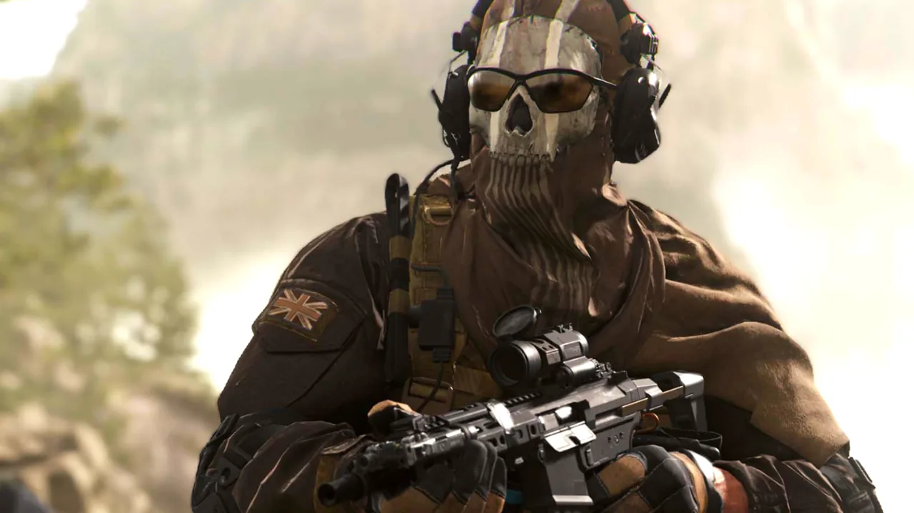
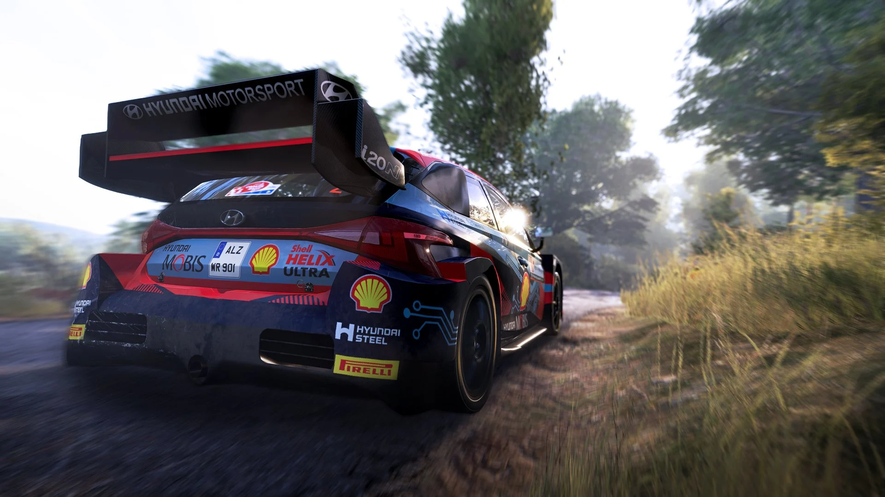
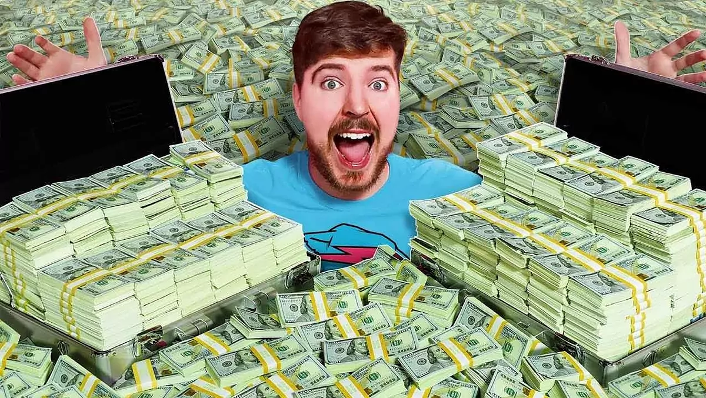

Azken Berrien Atala
Koi: Así es el nuevo equipo de Ibai Llanos y Gerard Piqué

El streamer y creador de contenidos Ibai Llanos y el futbolista y emprendedor Gerard Piqué presentaron este miércoles en Barcelona Koi, su nuevo equipo de eSports o deportes electrónicos. La expectación por conocer los detalles de esta alianza en forma de club era máxima desde hacía meses, tal como quedó demostrado con las 15.000 personas que acudieron al Palau Sant Jordi para presenciar la botadura y con los 350.000 usuarios que llegaron a reunirse en el canal del vasco en Twitch para seguir el evento en directo. La acogida que ha tenido el último proyecto de Llanos y Piqué refleja el peso que han cogido los deportes electrónicos. No en vano, según 'Statista', el negocio de los eSports en España facturó más de 21 millones de euros en 2020 y algunas previsiones apuntan a que en 2025 habrá 1.000 millones de espectadores alrededor del mundo. Así, los fundadores de Koi confían en conquistar ese mercado a golpe de derechos de emisión, patrocinios y venta de entradas.

Call of Duty: fan molesto visitó la oficina de Activision para quejarse de un baneo
Leer
mas

Confirman la fecha de llegada de WRC Generations en Switch
Leer
mas

Alguien le ofreció $1000 MDD a MrBeast por su canal de YouTube y el creativo lo
rechazó
Leer
mas